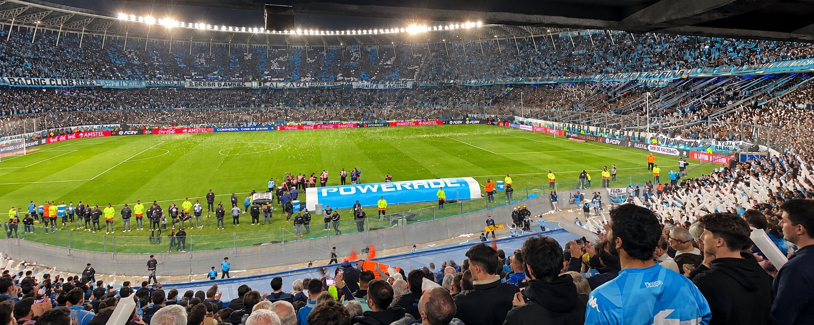
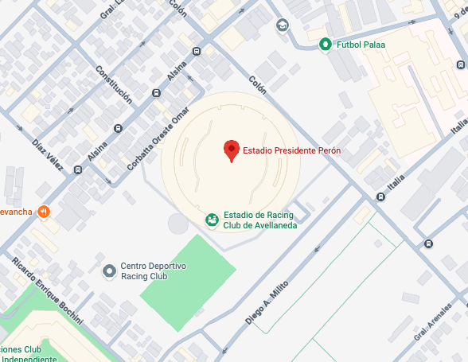
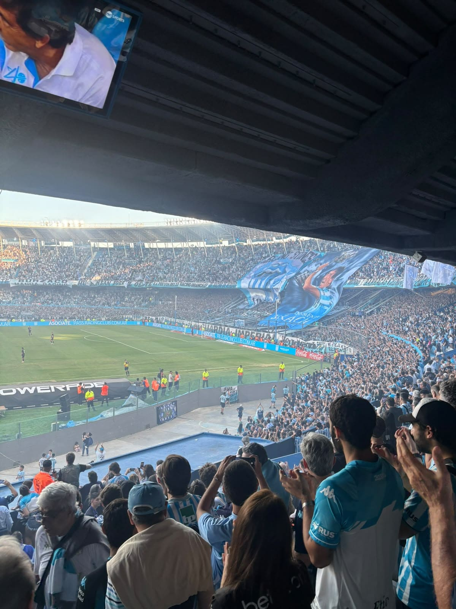
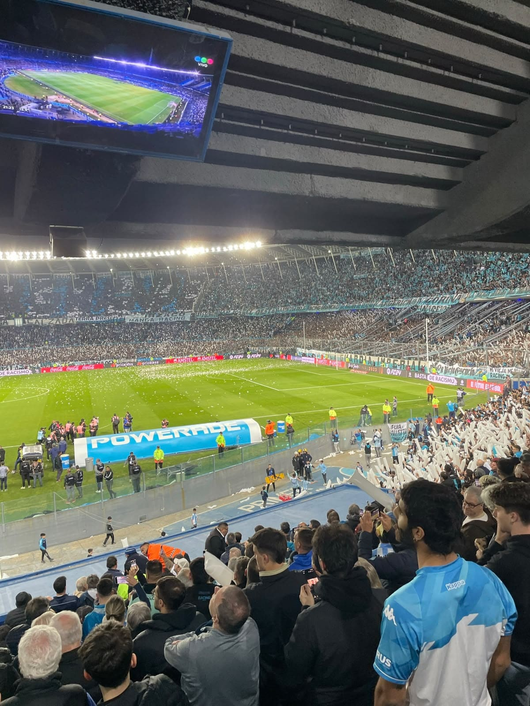
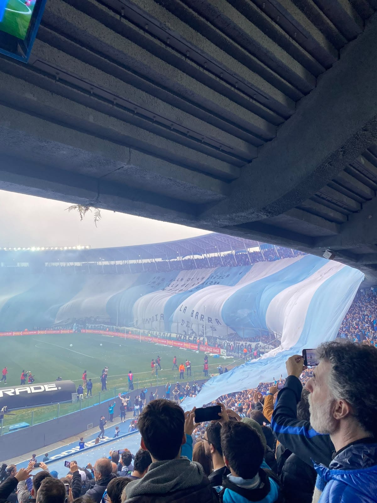
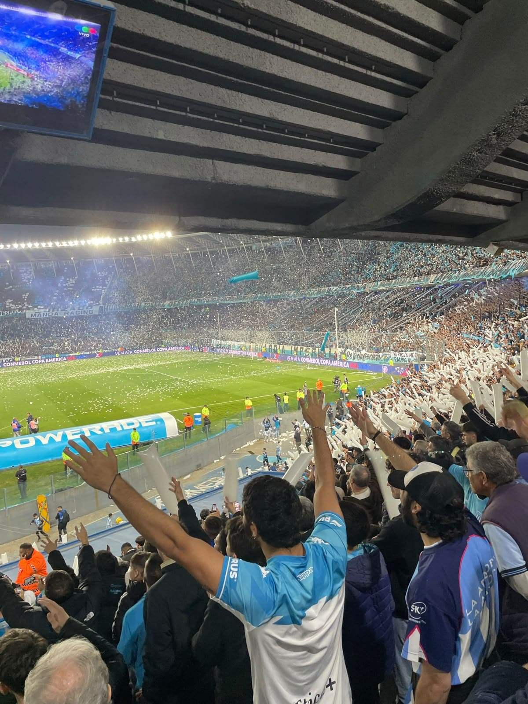

Sobre la cancha
El Estadio Presidente Perón, conocido popularmente como el Cilindro de Avellaneda, es uno de los
estadios más reconocibles del fútbol argentino. Su particular estructura, sus grandes tribunas y
la cercanía de los hinchas con el campo de juego crean una atmósfera que representa
perfectamente la identidad de Racing Club.
Más que el escenario de los partidos de Racing, el Cilindro es un lugar cargado de historia y
recuerdos. Sus tribunas fueron testigo de grandes momentos del club y siguen siendo el punto de
encuentro de generaciones de hinchas que comparten una misma pasión. Visitarlo permite conocer
una de esas canchas donde la historia del fútbol argentino se siente en cada rincón.
Contexto de imagenes
Una despedida de año que terminó en fiesta. La visita al Cilindro fue para ver a Racing enfrentarse a River en la última fecha de la Liga Profesional 2024. El partido terminó con triunfo de la Academia por 1-0, gracias a un cabezazo de Maximiliano Salas que hizo explotar las tribunas de Avellaneda. Desde la tribuna, vivir un Racing-River fue una experiencia completamente distinta. El Cilindro estuvo rodeado de banderas, cantos y una hinchada que acompañó al equipo durante todo el partido. Racing logró cerrar el año con una victoria frente a River, apenas unas semanas después de haberse consagrado campeón de la Copa Sudamericana.
Ubicacion Geografica

Galeria de imagenes tomadas



